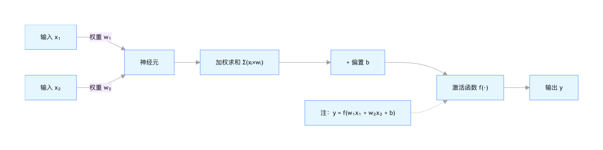
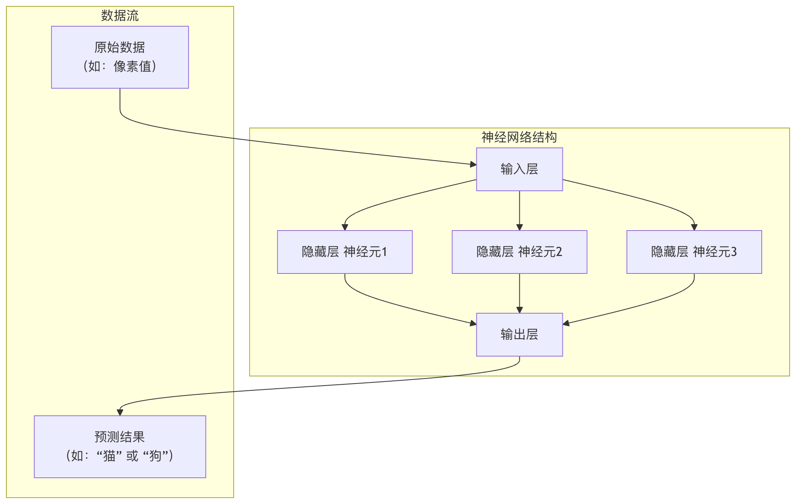

ニューラルネットワークの基本構造
人工知能の波の中で、深層学習は間違いなく最も輝くスターであり、深層学習の中核を成しているのが、まさにニューラルネットワーク。それは人間の脳のニューロンの働き方を模倣し、層を重ねた接続と計算を通じて、機械に学習と認知の能力を与えています。
初心者にとって、ニューラルネットワークの基本構造を理解することは、深層学習の扉を開く最初の鍵です。
この記事では、ゼロから始めて段階的にニューラルネットワークの構成を分解し、分かりやすい例えと明確なコードで、その動作原理を完全に理解できるようにします。
ニューラルネットワークとは？分かりやすい例え
想像してみてください。あなたが、猫と犬を見たことがない子どもに、その違いを教えているところを。どうしますか？
- まず、猫と犬の写真をたくさん見せるでしょう。
- 特徴を指摘します。「見て、猫の耳は普通とがっていて、顔は比較的丸いね。犬の耳は垂れていることが多く、顔つきはより長いね。」
- 子どもの脳（ニューラルネットワーク）は、これらの画像（入力データ）とあなたの指導（ラベル）を受け取ります。
- 彼の脳内のニューロンが働き始め、猫と犬を見分ける重要なパターン（耳の形や顔つきなど）を見つけ出そうとします。
- 何度も修正と学習を繰り返すうちに、彼の脳内に判断モデルが形成されます。次に新しい動物の画像を見たとき、自信を持って「これは猫」「これは犬」と言えるようになります。
ニューラルネットワークとは、この子どもの脳を単純化した数学モデルです。それは、多数の人工ニューロンが相互に接続して構成されるネットワークシステムであり、入力データから特徴やパターンを自動的に学習し、予測や意思決定に用いることができます。

ニューラルネットワークの基本構成要素：ニューロン
ニューロンはニューラルネットワークの最も基本的な計算単位であり、生物のニューロンを模倣しています。信号の受信－信号の処理－信号の伝達というプロセスです。
1つのニューロンの処理の流れ
典型的な人工ニューロンは主に3つのことを行います：
実例
def artificial_neuron(inputs, weights, bias):
"""
人工ニューロンの計算プロセスをシミュレーションします。
パラメータ:
inputs: 入力信号のリスト，例: [x1, x2, x3]
weights: 各入力に対応する重みのリスト，例: [w1, w2, w3]
bias: バイアス項，定数
戻り値:
output: ニューロンの出力
"""
# 1. 加重和：各入力にその対応する重みを掛け、バイアスを加えます
weighted_sum = 0
for i in range(len(inputs)):
weighted_sum += inputs[i] * weights[i]
weighted_sum += bias
# 2. 活性化関数による処理：非線形関数を通じて「活性化」して信号を出力するかどうかを決定します
output = activation_function(weighted_sum)
return output
1つの図と1つの表を使って、より直感的に理解しましょう：

ニューロンの各部品の機能の詳細：
| 部品 | たとえ | 数学的表現 | 働き |
|---|---|---|---|
| 入力 \(x\) | 他のニューロンからの信号 | \( x_1, x_2, ..., x_n \) | 外部情報や前の層のニューロンの出力を受け取ります。 |
| 重み \(w\) | 信号の重要度 | \(w_1, w_2, ..., w_n\) | 各入力がニューロンの出力に与える影響の度合いを決定します。学習のプロセスとは、これらの重みを調整し続けるプロセスです。 |
| バイアス \(b\) | ニューロンの活性化しきい値 | \(b\) | 定数であり、ニューロンの活性化のしやすさを調整します。加重和を全体的に上下に移動させるものと理解できます。 |
| 重み付き和 \(z\) | 信号の総強度 | \(z = (x_1w_1 + x_2w_2 + ... + x_nw_n) + b\) | すべての入力信号を総合します。 |
| 活性化関数 \(f\) | スイッチ兼加工器 | \(a = f(z)\) | 非線形性を導入します。これがないと、多層ネットワークは単層ネットワークに退化し、複雑なパターンを学習できません。 |
よく使われる活性化関数
活性化関数はニューラルネットワークに非線形性をもたらします。以下は最もよく使われる3つです：
Sigmoid
- 公式：\(f(z) = \frac{1}{1 + e^{-z}}\)
- 特徴：入力を (0, 1) の範囲に圧縮します。二値分類問題の出力層でよく使われます。勾配消失問題を引き起こしやすいです。
- 画像：滑らかなS字型の曲線です。
ReLU（整流線形ユニット）
- 公式：\(f(z) = max(0, z)\)
- 特徴：計算が単純で、勾配消失問題を効果的に緩和でき、現在最もよく使われる隠れ層の活性化関数です。
- 画像：原点で折れ曲がる折れ線で、負の数は0を出力し、正の数はそのまま出力します。
Softmax
- 公式：\(f(z_i) = \frac{e^{z_i}}{\sum_{j=1}^{K} e^{z_j}}\)
- 特徴：複数のニューロンの出力を確率分布（すべての出力の合計が1）に変換します。多クラス分類問題の出力層専用です。。
ニューラルネットワークの階層構造
単一のニューロンは能力が限られており、まるで単一の脳細胞が思考できないのと同じです。多数のニューロンを層ごとに組織化すると、強力なニューラルネットワークが形成されます。典型的なニューラルネットワークには、次の3つの層があります。

1. 入力層
- 役割：ネットワークの感覚器官であり、生データを受け取ります。
- 特徴：この層のニューロン数は通常、入力データの特徴量の数に等しくなります。例えば、28x28ピクセルのグレースケール画像をフラット化すると784個の特徴量になり、784個の入力ニューロンに対応します。入力層は何も計算を行いません、データを渡すだけです。
2. 隠れ層
役割：ネットワークの脳であり、複雑な特徴抽出と変換を行います。
特徴：
- 入力層と出力層の間にあり、1層または複数層にできます（深層学習はこれに由来します）。
- 各層のニューロンは、前の層のすべてのニューロンの出力を入力として受け取り、自分の出力を計算して次の層に渡します（これは全結合と呼ばれます）。
- 隠れ層のニューロンは ReLU などの活性化関数を使用し、非線形性を導入します。
3. 出力層
役割：ネットワークの意思決定者であり、最終的な予測結果を出力します。
特徴：ニューロンの数はタスクによって決まります。
- 二値分類：ニューロン1つ（Sigmoidを使用）またはニューロン2つ（Softmaxを使用）。
- 多クラス分類（Kクラス）：K個のニューロン（Softmaxを使用）。
- 回帰（連続値を予測）：ニューロン1つ（通常は活性化関数を使用しません）。

概念図：
実践：Pythonでニューラルネットワークを構築する
理論をいくら説明しても、実際に手を動かすことには敵いません。次に、私たちはNumPyライブラリを使って、ゼロから最もシンプルな3層ニューラルネットワーク（隠れ層1つ）を構築し、順伝播の計算を1回行います。
実例
# 活性化関数の定義
def sigmoid(x):
"""Sigmoid 活性化関数"""
return 1 / (1 + np.exp(-x))
def relu(x):
"""ReLU 活性化関数"""
return np.maximum(0, x)
# シンプルなニューラルネットワークの初期化
def initialize_network(input_size, hidden_size, output_size):
"""
ネットワークの重みとバイアスを初期化します。
パラメータ:
input_size: 入力層のニューロン数
hidden_size: 隠れ層のニューロン数
output_size: 出力層のニューロン数
戻り値:
network: 各層のパラメータを含む辞書
"""
np.random.seed(42) # 乱数シードを設定し、毎回同じ結果になるようにする
network = {}
# 入力層 -> 隠れ層 のパラメータを初期化
# 重み行列の形状: (次の層のニューロン数, 前の層のニューロン数)
network['W1'] = np.random.randn(hidden_size, input_size) * 0.01
network['b1'] = np.zeros((hidden_size, 1)) # バイアスは列ベクトル
# 隠れ層 -> 出力層 のパラメータを初期化
network['W2'] = np.random.randn(output_size, hidden_size) * 0.01
network['b2'] = np.zeros((output_size, 1))
return network
# 順伝播関数
def forward_propagation(network, X):
"""
順伝播を実行し、ネットワークの出力を計算します。
パラメータ:
network: 重みとバイアスを含む辞書
X: 入力データ，形状は (特徴量数, サンプル数)
戻り値:
y_pred: ネットワークの予測出力
cache: 中間結果をキャッシュ（後続の逆伝播に使用）
"""
# パラメータを取得
W1, b1, W2, b2 = network['W1'], network['b1'], network['W2'], network['b2']
# 第1層の計算: 入力層 -> 隠れ層
Z1 = np.dot(W1, X) + b1 # 加重和
A1 = relu(Z1) # ReLU活性化関数を適用
# 第2層の計算: 隠れ層 -> 出力層
Z2 = np.dot(W2, A1) + b2 # 加重和
A2 = sigmoid(Z2) # Sigmoid活性化関数を適用（二分類を想定）
# 中間結果をキャッシュする。逆伝播の際に使用する
cache = {'Z1': Z1, 'A1': A1, 'Z2': Z2, 'A2': A2}
return A2, cache
# --- 実行してみましょう！---
# 1. ネットワーク構造を定義：2つの入力特徴量、3つの隠れニューロン、1つの出力（二分類）
input_size = 2
hidden_size = 3
output_size = 1
# 2. ネットワークを初期化
my_network = initialize_network(input_size, hidden_size, output_size)
print("重み W1 の形状（隠れ層 x 入力層）:", my_network['W1'].shape)
print("バイアス b1 の形状:", my_network['b1'].shape)
print("重み W2 の形状（出力層 x 隠れ層）:", my_network['W2'].shape)
# 3. サンプル入力データを作成（2つの特徴量、1つのサンプル）
# X の列はサンプルを、行は特徴量を表す
X_sample = np.array([[1.5], [-0.5]]) # 形状 (2, 1)
print("\n"入力データ X:", X_sample.T) # .T は転置して表示するためのもので、見やすくするため
# 4. 順伝播を実行
y_pred, cache = forward_propagation(my_network, X_sample)
print("\n"ニューラルネットワーク予測出力 (A2):", y_pred)
# 出力が0.5より大きければクラス1、それ以外はクラス0とみなす
predicted_class = 1 if y_pred > 0.5 else 0
print(f"予測クラス: {predicted_class}")
コードの解説と出力分析：
初期化：2-3-1 構造のネットワークを作成しました。W1は 3x2 の行列で、2つの入力から3つの隠れニューロンへの接続重みを表します。
順伝播：
- 入力
[1.5, -0.5]まずW1掛け合わせて加算しb1、隠れ層の加重和を得ますZ1。 Z1ReLU 関数を通して、隠れ層の活性化値を得ますA1。A1次にW2掛け合わせて加算しb2、出力層の加重和を得ますZ2。Z2最後に Sigmoid 関数を通して (0,1) の範囲に圧縮し、最終的な予測確率としますA2。
出力：重みがランダムに初期化されているため、この未訓練ネットワークの予測出力はA2ランダムな値（0.5に近い）になります。ニューラルネットワークを訓練する目的は、大量のデータを通じて繰り返し調整し、W1, b1, W2, b2それによりA2異なる入力に対して有意義な予測を生成できるようにすることです。
核心概念のまとめと学習ロードマップ
この記事を通じて、ニューラルネットワークの基礎を習得しました：
| 概念 | 重要なポイント |
|---|---|
| ニューロン | 計算ユニット。次の計算を行います：加重和 -> バイアス加算 -> 活性化関数。 |
| 重みとバイアス | モデルが学習すべき中核パラメータであり、ネットワークの振る舞いを決定します。 |
| 活性化関数 | 非線形性を導入し（ReLU、Sigmoidなど）、ネットワークが複雑な関係を学習できるようにします。 |
| ネットワーク層 | 入力層（データを受け取る）、隠れ層（特徴抽出）出力層（予測を生成する）。 |
| 順伝播 | データが入力層から出力層へ流れ、予測値を計算するプロセス。 |
あなたの次の学習ステップ：
- 損失関数：ネットワークの予測の良し悪しをどのように定量化するか（例：平均二乗誤差、交差エントロピー損失）？
- 逆伝播と勾配降下法：ニューラルネットワークはどのように「悪さ」の程度に応じて重みとバイアスを自動調整するのか（これが学習の本質です）？
- フレームワークを使った実践：を使用して
TensorFlow或PyTorchなどの最新フレームワークを使えば、より複雑なネットワークを簡単に構築・訓練でき、ゼロから書く必要はありませんNumPyコード。
基本構造を理解すれば、すべての複雑な深層学習モデル（画像用のCNN、音声用のRNNなど）は、この基本構造の上に、ニューロンの接続方法や層の機能を変えることで進化してきたことがわかるでしょう。これで、深層学習の広大な世界を探索し続けるための地図を手に入れました。
その他の拡張
クリックしてノートを共有
<p style="font-size:14px;">ノートはこの記事の内容を拡張したものである必要があります！</p><br> <p style="font-size:12px;"><a href="../tougao.html" target="_blank">記事の投稿は、こちらをクリックしてください</a></p> <p style="font-size:14px;"><a href="../w3cnote/runoob-user-test-intro.html" target="_blank">登録招待コードの取得方法</a></p> <h3 class="text-muted"><i class="fa fa-info-circle" aria-hidden="true"></i> ノートを共有する前に<a href=";.html" class="runoob-pop">ログイン</a>が必要です！</h3> <p><a href="../w3cnote/runoob-user-test-intro.html" target="_blank">登録招待コードの取得方法</a></p>